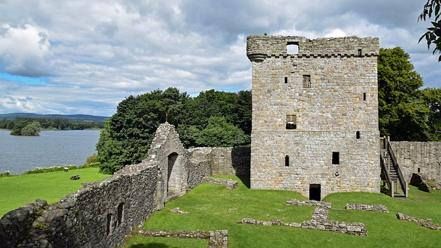
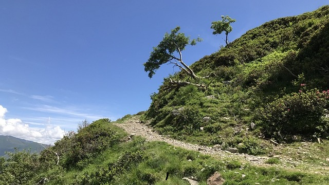
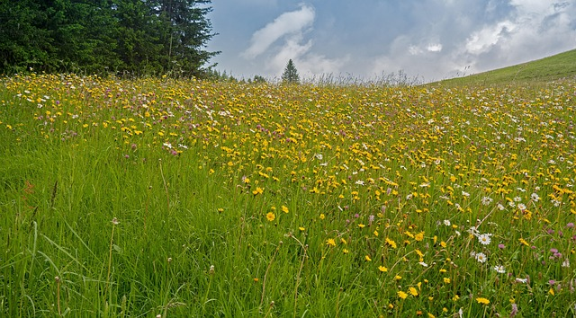
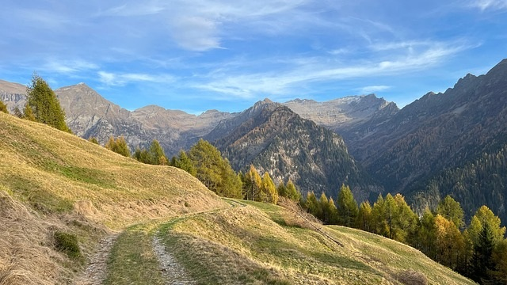

Walking Routes
Call section
-
For a quicker response call us:
Popular Walking Routes

Droncar Forest
Easy woodland trails with historic ruins and wildlife.

Muirdac Hill
Peaceful woodland trails with stunning valley views.

Leethorn Meadows
Perfect for picnics and butterfly watching.

Airy Hill Route
A challenging hike with incredible views.
Droncar Forest
Droncar is a large forest that drapes the hillsides on the south side of the Tweed Valley. The trails are great for tranquil walks, gentle cross-country rides and relaxed horse riding. There are lovely views up the Tweed Valley towards Tressforest.
Look out for red squirrels and a wealth of birdlife. Droncar Tower, built in the 1500s, is now a ruin - but bats think it's an ideal home. Don't miss the site of the Iron Age fort at Castle Knight - the walls are built on top of a layout some 2,000 years old. Climb through rolling hillside forest for glorious valley views.
Muirdac Hill
Muirdac Hill gives commanding views over Peebles and Tressforest Forest. The scenery is at its best on misty mornings or in the low light of early evening.
It's an ideal place for wildlife spotting. Keep an eye - and an ear - open for small birds such as siskins, warblers and crossbills, or greater spotted woodpeckers. If you're very lucky you'll catch a glimpse of tawny owls fleeting through the trees at dusk or red deer bouncing through the trees.
Leethorn Meadows
Leethorn, there are walks, wildlife, stunning views and quirky history to discover at this quiet forest. The grassy slopes below the car park are just right for butterflies like the Small Copper and the Northern Brown Argus.
Airy Hill Route
Airy you'll have a steep, challenging climb over the common before heading down into some woodland. After heading down into woodland, you'll have a steep descent, before a brutal climb up Nawal Scar road. Although you'll need good fitness, you can reward yourself with some refreshments in Torver at the end.